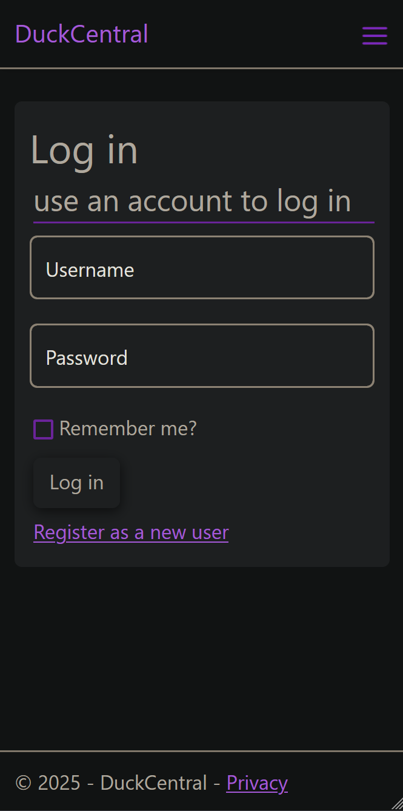
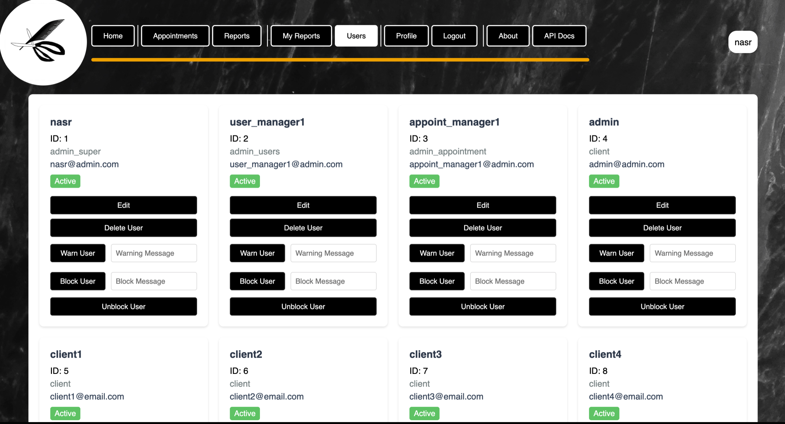
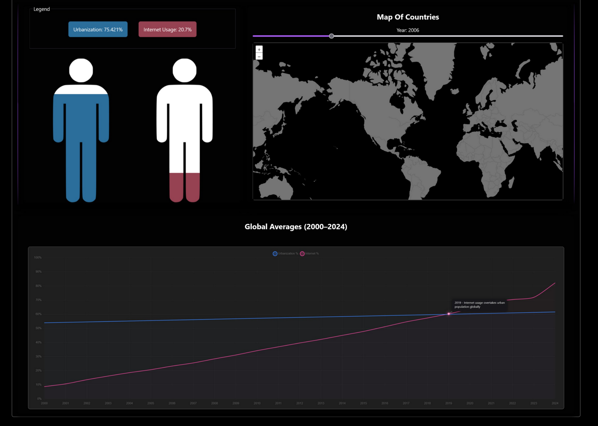

Portfolio
Mohamadmahdi Masumi
Hello, I'm Computer Science student at Dawson College. I'm interested in working in the backend, but I'm looking to develop both my backend and frontend skills.
Education & Skills
Education
DEC in Computer Science Technology
Dawson College — 2023–Present
| Programming Languages | Software & Tools Used |
|---|---|
|
|
My Projects
Homelab
September 2024
Tech: Proxmox (Virtualization manager OS), Caddy (Reverse proxy), Docker
I deployed and maintain a homelab with various VMs and containers in it
for personal use. I host apps such as game servers and web applications.
I have Caddy (A reverse proxy) that routes external traffic to internal apps
and handles SSL certificates.
I learned a lot about networking, backups, SSL certificate management and
especially documentation such as enginnering logs!
Personal Website
August 2025
C#, ASP.NET (Razor Pages)
I developed a Razor Pages website for personal use with authentication, authorization, and admin functionality. I made it so that I could
some books that I had stored in a database. The website itself is barebones, but good for me to use.

MonPlanner (Dawson College)
April 2025
C#, Avalonia, EF Core
I led a 3-person team to build a desktop application for planning guided bus tours.
Basically, a user can see available bus tourists rides and their routes
and they can create a plan. They will be able to choose a bus ride and which stops they want to visit, and they will be able to see an estimated price for each location, such as how much it would cost to go to a particular restaurant
at a stop.
There is also a resource management system for staff so they can change
any of the resources such as buses, routes, stops, etc.
I learned a lot about separating business logic from the UI/database, and GUI desktop development using Avalonia and EF Core.
The Shortcut (Dawson College)
April 2025
Python, Flask, HTML/CSS/JS, PostgreSQL
I Led a 3-person team to develop a hair salon appointment management web application, which includes a customer appointment booking system as well as a
admin user management system.
I improved my collaboration and project organization across a team a lot in this
project. There were a lot of tasks to do, so it was the first time that I
didn't fully know every part of a project.

Convergence (Dawson College)
MERN Stack — November 2025
In a 3-person team, I developed an interactive data visualization website
to visualize the difference and growth of urbanization and internet usage
around the world.
I participated in an issue-based workflow where all bugs, features, and discussions
were in issues. The nice thing about it was how well I could track progress,
and come back to earlier discussions to figure out why certain decisions were made.
One of our tasks in this project was to also measure performance and optimize
both the client as well the server side. I had to implement features such as
client-side caching, lazy loading, and server-side library tree shaking.

Happing Reading (Dawson College)
November 2025
Kotlin (Jetpack Compose), Android, SQLite
I Led a 3-person team to build an Android EPUB reading application. Users
can download books,read chapters , search for content within a book, and use
TTS to read aloud.
I gained some experience making mobile-friendly design, as well as testing
GUIs for applications.